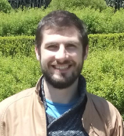

 Hello and welcome to my website! I am a Lecturer in Atlantic Technological University in Galway Ireland. My research interests include: kinematic and dynamic modeling of serial, parallel and cable driven robots, control of cooperative robots, visual servoing and human robot collaboration.
Before starting at ATU, I spent 3 super years at IMR where I was a researcher in the adaptive robotics team at IMR. At IMR, my research focused on enabling Irish manfuacturing companies to exploit the lastest robotic technology.
Before, returning to Ireland I was a research scientist at the RIVeR lab, in Northeastern university, working with NASA's humanoid robot Valkyrie. My research focused principally on dual arm manipulation in constrained environments, whole body control using exteroceptive sensor feedback, human robot interaction at different task levels. I also lectured Robot Dynamics & Control, an undergraduate course at Northeastern University.
I worked as a researcher in the robotics team at IRT Jules Verne (Institut de recherche technologique), Bouguenais, France. My work at IRT focused primarily on collaborative robots (cobots) for industrial partners (Renault, Airbus, STX, GE amongst others). In addition to this, I worked extensively on cable driven parallel robots and vision force control for industrial applications.
I carried out my PhD research in IRCCyN (LS2N) , Ecole Centrale de Nantes, France between 2011-2014. The topic of my thesis was the kinematic and dynamic modeling of closed chain systems in particular cooperative robots. Other contributions included force/vision control for deformable object separation and the modeling of parallel robots with flexible platforms.